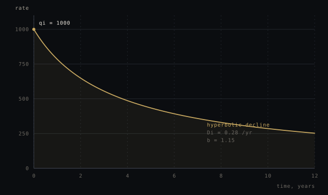
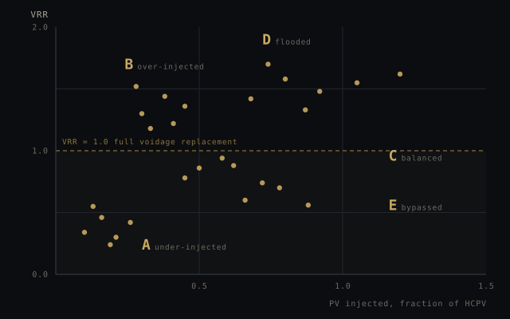
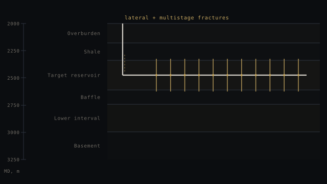
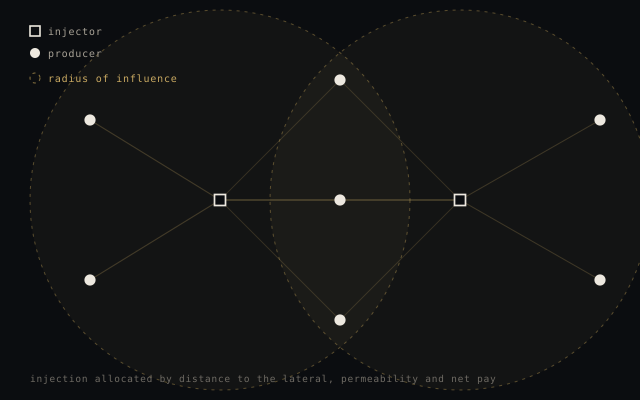

Tier 01
Fast read
Two specialists, one short written opinion
- Your question read by two disciplines, not one
- A short written opinion: what holds, what does not
- Marked working opinion — not a signature
Independent second opinion · subsurface, wells and facilities
More than a hundred years of combined field experience across drilling, completions, reservoir, production and surface facilities — including the regions where the textbook runs out. We read the question, not the slide deck.
Why a second opinion
01
A reservoir number that ignores the drilling plan, or a completion design that ignores the facilities, is internally consistent and wrong.
02
An asset team defends a forecast it has lived with for two years. Fresh eyes see the assumption that was never written down.
03
A proper review swallows the decision window. By the time it lands, the choice has already been made on the original number.
Arctic and sub-Arctic, deserts, deepwater, remote gas and mature waterfloods. The places that teach judgement rather than procedure.
The offer
You choose how far the answer has to travel: a fast read for the decision in front of you, or a review that survives a committee.
Tier 01
Two specialists, one short written opinion
Tier 02
Checked across the full chain, under a name
The protocol
A defined process, not an adjective. Every signed answer carries the same four steps and the same paper trail.
01
The decision, the admissible data, and what the answer will not cover.
02
An independent re-derivation: sources, arithmetic, assumptions, plausibility — checked by each discipline the question touches.
03
Issued under a named engineer's signature, review record attached.
04
Version, inputs and reviewer logged — reproducible and defensible.
The bench
One question rarely belongs to one discipline. The bench is built so that the drilling answer and the facilities answer are in the same room as the reservoir answer.
Well design, casing and mud programmes, horizontal wells and multistage fracturing, interference between fractures, lifting and workover choices.
PRMS 2018 and SEC classification, decline analysis, material balance, pressure support, volumetrics and the assumptions behind each.
Waterflood diagnostics, voidage replacement, artificial lift, well performance and the difference between a forecast and a plan.
Gathering, separation, compression, water handling and the capacity limits that decide what the subsurface is allowed to deliver.
Well count and spacing, phasing, plateau and ramp-up, debottlenecking and the cost of starting late.
Cash-flow screening, discounting, tariff and fiscal terms, and the sensitivity that tells you which assumption the decision actually hangs on.
Disciplines in detail

Decline analysis, type wells, material balance, flowing-pressure limits.

Pattern-level voidage replacement and sweep diagnosis, well by well.

Lateral placement, staging, interference, well count and spacing.

Voidage shared between producers by distance to the lateral, permeability and net pay.
Engagement
No demo theatre. Send the decision and the data behind it; the bench decides whether a second opinion is worth your money.
One question · one asset · a written opinion
The same team on call for your asset, so the second question costs you a phone call rather than a procurement cycle.
A full cross-discipline review: every discipline the question touches, one named signature, the working file attached.
Scope sets the work and the work sets the fee, so we agree both after the first conversation. The constraint is expert time, and we would rather say that than pretend otherwise.
The rock, the data, and the assumptions somebody chose to write down.
Contact
Describe the decision and who is waiting for it. We will tell you whether the bench is the right second opinion for it.
Direct contact@reserves-horizon.com